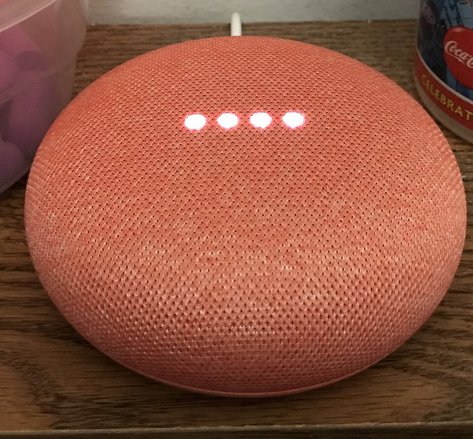
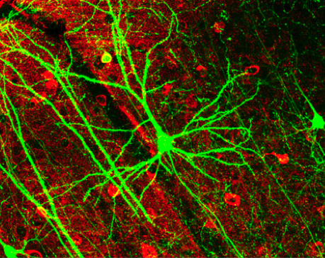
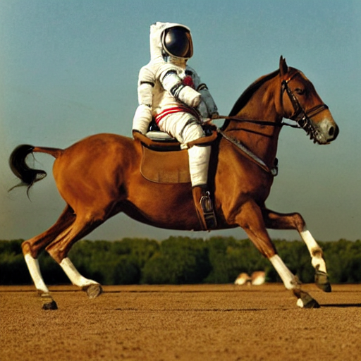

AI is not one thing. Today we open it up, layer by layer, and find out what is actually doing the learning.
النهارده هنفك كلمة AI ونشوف الطبقات اللي جواها واحدة واحدة — مين بالظبط اللي بيتعلّم.
Before we start · Lecture 2
Where we got to
5stages of IT, from a room-sized computer to the cloud
×2transistors about every two years — Moore’s Law
2010scloud computing made large-scale data and AI possible
That last one is the door into today. The cloud gave us the data and the computing power — this lesson is about what we did with them.
آخر مرحلة — السحابة — هي اللي فتحت الباب للدرس ده: داتا كتير وقدرة حوسبة كبيرة. النهارده هنشوف عملنا بيهم إيه.
Right now, in your pocket
You used AI four times before breakfast
a spam filter sorted your emaila store recommended a productan app translated a sentenceChatGPT wrote you a paragraph
All four are AI. None of them work the same way. By the end of this lesson you will be able to say which is which.
الأربعة دول كلهم AI، بس شغالين بطرق مختلفة خالص. في آخر الحصة هتعرف تفرق بينهم.
Today’s question
What is AI — and how do machine learning, deep learning and generative AI fit inside it?
سؤال النهارده: إيه هو الـ AI أصلاً، وإزاي الـ machine learning والـ deep learning والـ generative AI بيدخلوا جواه؟
Explore · in pairs
Before you read on
With your partner, list three things your phone does that seem to need intelligence. For each one predict: does it follow rules somebody wrote, or did it learn from examples? Give one reason.
Keep your answers. We come back to them at the end.
مع زميلك: اكتبوا تلات حاجات موبايلكم بيعملها وشكلها محتاج ذكاء. ولكل واحدة توقّعوا: بيتبع قواعد حد كتبها، ولا اتعلّم من أمثلة؟ وليه؟ احتفظوا بالإجابات، هنرجعلها في الآخر.
Part 1
What is AI?
الجزء الأول: يعني إيه ذكاء اصطناعي.
1 · The definition
AI is a general term, not one machine
Artificial Intelligence — a general term for technologies that reproduce or perform intelligent human behaviour — learning, reasoning, judgment — on a computer.
It is the name of a whole field. Saying “an AI” is a bit like saying “a vehicle”: true, but it does not tell you whether you are looking at a bicycle or a lorry.
AI اسم لمجال كامل مش لجهاز معيّن. لما تقول “ده AI” ده زي ما تقول “دي عربية” — صح، بس ماقلتش عجلة ولا تريلا.
1 · The book’s three examples
Where you meet it
Example
What the machine is doing
Speech recognition
Turning the sound of your voice into words
Image recognition
Deciding what is in a photograph
Translation
Changing one language into another
Learn these three — they are the examples the textbook gives for AI itself, and they come up in questions.
التلاتة دول هما الأمثلة اللي الكتاب بيديها للـ AI نفسه. احفظهم، بييجوا في الأسئلة.
1 · The limit that matters
Today’s AI is narrow
كل AI شاطر في حاجة واحدة بس. اللي بيترجم مايعرفش يشوف وش، واللي بيمسك السبام مايعرفش يترجم. والـ AI اللي يعمل كل حاجة لسه مش موجود.
1 · The same three, photographed
AI you can point at

Speech recognitionIt turns the sound of a voice into words, and does nothing else.ده بيحوّل الصوت لكلام — وبس. مابيعرفش يترجم ولا يشوف.Image recognitionThousands of handwritten digits. This is what “learning from examples” looks like.أرقام مكتوبة بخط اليد. دي شكل التعلّم من الأمثلة على الحقيقة.A car that reads the roadThe book’s own example of deep learning: image analysis for autonomous driving.مثال الكتاب نفسه على الـ deep learning: تحليل صور القيادة الذاتية.
Photos: Wikimedia Commons · public domain or Creative Commons. Used for teaching.
التلات صور دي نفس أمثلة الكتاب بس على الحقيقة. خلي الطلبة يقولوا كل واحدة شغالة إزاي قبل ما تقول.
Think it through
A spam filter and a shop’s recommendations do completely different jobs. What do they have in common underneath?
Two minutes with your partner. Answer in one sentence.
فلتر السبام وترشيحات المتجر بيعملوا حاجتين مختلفتين تمامًا. إيه اللي مشترك بينهم من جوه؟ دقيقتين مع زميلك، وإجابة في سطر واحد.
Part 2
The nested layers
الجزء التاني: الطبقات اللي جوه بعض.
2 · The one picture to remember
Boxes inside boxes
دي أهم صورة في الدرس: الـ AI هو الأوسع، وجواه machine learning، وجواه deep learning، وجواه generative AI. مش أربع حاجات جنب بعض — دول جوه بعض.
2 · Machine learning
It learns patterns from data
Machine learning — one of the learning technologies that makes AI work. It learns patterns from data to make predictions and judgments.
Examples the book gives: spam filters and product recommendations. That is the answer to the question you just discussed — different jobs, same underlying method.
الـ machine learning بيتعلّم أنماط من الداتا عشان يتنبأ ويحكم. وأمثلة الكتاب: فلتر السبام وترشيح المنتجات — دي إجابة السؤال اللي لسه سألناه.
2 · The difference that matters
Rules you write, or rules it works out
الفرق الأساسي: في البرمجة العادية انت بتكتب القواعد بإيدك. في الـ machine learning بتديله أمثلة متحلولة وهو يستنتج القاعدة لوحده.
2 · Deep learning
A more advanced kind of machine learning
Deep learning — an advanced technology within machine learning that uses neural networks. It learns complex patterns using large-scale data.
Example
What it handles
Image analysis for autonomous driving
Reading a whole road scene at once
Speech synthesis
Producing a voice that sounds human
الـ deep learning نوع متقدم جوه الـ machine learning، بيستخدم الشبكات العصبية ومحتاج داتا ضخمة. أمثلته: تحليل صور القيادة الذاتية، وتوليد الصوت.
2 · The core technology
A neural network
It is the core technology behind the recent jump in what AI can do.
الشبكة العصبية متصممة على فكرة خلايا المخ. مفيش جزء منها ذكي لوحده — الذكاء بييجي من ربط أجزاء بسيطة كتير مع بعض. ودي التقنية اللي شايلة تقدّم الـ AI الحديث.
2 · Why large-scale data matters
It only knows what it was shown
الموديل مابيتعلمش قاعدة عامة، بيتعلم اللي اتعرض عليه. فالحاجة النادرة هي بالظبط اللي بيغلط فيها — وبثقة كمان.
Pause & think
Deep learning needs large-scale data to learn. So why might an AI struggle with something it has rarely seen?
الـ deep learning محتاج داتا ضخمة عشان يتعلم. طب ليه بيتلخبط في حاجة نادرًا ما شافها؟
Part 3
Generative AI
الجزء التالت: الذكاء الاصطناعي التوليدي.
3 · Generative AI
It makes new data
Generative AI — AI technology that uses deep learning to generate new data: text, images, audio, programs.
Examples the book gives: ChatGPT and image-generation AIs. Note where it sits — it is built on deep learning, which is inside machine learning, which is inside AI.
الـ generative AI بيستخدم الـ deep learning عشان يطلّع داتا جديدة: نص، صور، صوت، برامج. وخلي بالك من مكانه — مبني على الـ deep learning اللي جوه الـ machine learning اللي جوه الـ AI.
3 · The word “generate”
Choosing an answer, or making one
الفرق بين إنه يختار من حاجات موجودة، وإنه يطلّع حاجة جديدة محدش كتبها قبل كده. دي معنى كلمة generate.
3 · What counts as “new data”
Four kinds
textimagesaudioprograms
If a question asks what generative AI produces, these four are the answer. A program counts too — code is just another kind of text it can write.
لو السؤال بيقول الـ generative AI بيطلّع إيه، دي الأربعة. والبرامج منهم — الكود ده برضو نص بيكتبه.
Worked example · page 15
True or false?
Machine learning is one of the technologies that makes AI work. ✓ True
Deep learning is a completely different technology from machine learning. ✗ False — it is inside it
Generative AI uses deep learning to generate new data. ✓ True
AI and machine learning have the same meaning. ✗ False — AI is the broad field
التمرين ده من الكتاب صفحة 15. لاحظ إن الغلطتين الاتنين سببهم حاجة واحدة: إن الطالب فاكر الطبقات دي جنب بعض مش جوه بعض.
Exam warning
The two sentences students get wrong every year
✗ “Deep learning is completely different from machine learning”
It is not a different technology
It is an advanced kind of machine learning
Go back to the nested boxes
✗ “AI and machine learning mean the same thing”
AI is the broad field
Machine learning is one technology inside it
Same trap, other direction
الجملتين دول بيتكرروا في الامتحان كل سنة، والسبب واحد: الطالب مش شايف إن الطبقات جوه بعض. ارجع لصورة الصناديق.
Use it carefully
A fluent answer can still be wrong
Generative AI is built to produce text that reads like a good answer. Reading well and being correct are not the same thing.
Why you check before you hand it in
It has no way of knowing it is wrong, so it will not warn you. Check any fact it gives you against the book.
الـ generative AI متصمم يطلّع كلام شكله مقنع. وشكله مقنع مش معناه إنه صح — وهو مش هيحذّرك لأنه أصلاً مش عارف. راجع أي معلومة منه على الكتاب.
In a new context
A farmer photographs a diseased crop leaf
An app names the disease from the photo, and writes a short treatment plan.
Which part is image recognition, and which part is generative AI?
If the disease is rare in that region, which part would you trust less — and why?
فلاح بيصوّر ورقة زرع مريضة. التطبيق بيحدد المرض وبيكتب خطة علاج. أنهي جزء تعرّف على صور وأنهي جزء توليد؟ ولو المرض نادر في المنطقة دي، هتثق في أنهي جزء أقل؟
3 · Inside, and made
What the words actually point at

A real nerve cellThe thing a neural network is modelled on. One of these is not clever either.دي الخلية العصبية اللي الشبكة متصممة على فكرتها. وهي كمان لوحدها مش ذكية.Where large-scale data livesDeep learning needs this much machine. It is why the cloud stage mattered.الـ deep learning محتاج الكم ده من الأجهزة. عشان كده مرحلة السحابة كانت مهمة.

Nobody took this photoGenerated from a sentence. There was never an astronaut, a horse, or a camera.الصورة دي محدش صوّرها. اتولدت من جملة — مفيش رائد فضاء ولا حصان ولا كاميرا.
Photos: Wikimedia Commons · public domain or Creative Commons. Used for teaching.
قف عند الصورة التالتة واسأل: إزاي نعرف إن دي مش صورة حقيقية؟ دي مقدمة لسلايدة التحذير الجاية.
Key takeaway
AI is the field. Everything else is a box inside it.
AIintelligent behaviour on a computer
MLlearns patterns from data
DLneural networks, large data
Genmakes new text, images, audio
الخلاصة: AI هو المجال كله، وكل واحد بعده صندوق جواه. والترتيب ده هو اللي بيتسأل عليه أكتر حاجة.
Before you go
Exam — Lectures 1, 2 and 3
It covers this session and the ones before it. At the end it shows you, section by section, which parts to read again.
امتحان على المحاضرات التلاتة. في الآخر هيوضحلك انت ضعيف في أنهي جزء بالظبط.